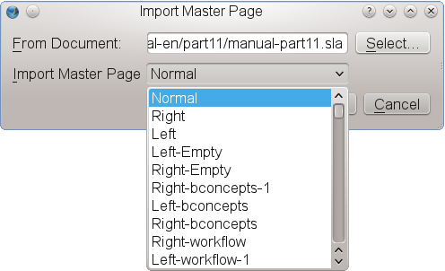
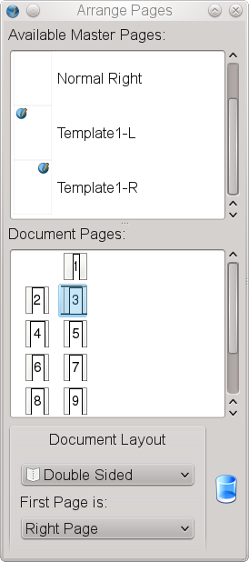

Master Pages are the means to add content to pages which have repeating content like page numbers, chapter names, section heads and the like. Users of other page layout applications might be familiar with this concept of static page backgrounds. Fundamental to understanding how they work is that these pages are not editable from the normal page canvas. All items except page numbers are static background items.
Thoughtful creation of master pages can vastly simplify and speed up the creation of complex documents – the more complex, the more essential they are. There are several reasons to use Master Pages, among them the ability to automatically add page numbers or avoiding the hassle of inserting objects that are repeatedly used in the same place over and over again.
There are basically two ways to create a Master Page. The most obvious is to create a new one from scratch, which is actually is quite simple: Go to Edit > Master Pages. This will bring up the Master Page dialog:
|
As you can see, Master Pages have already been automatically created when you created the new document. How many and what kind of Master Page depends on the document layout you chose: Single-page layouts have one Master Page, double-sided layouts two etc. It is generally a good idea not to touch the “Normal” Master Pages and create new ones instead.
The Master Page dialog shown above offers four options, from left to right:
|  |
 |
As with creating Master Pages, there are also several ways to apply them.
The most obvious way to apply a Master Page is via Page > Apply Master Page, which will bring up the following dialog:
 |
In the dropdown list at the top of the dialog you can choose the Master Page you want to apply.
The options below let you choose the range of pages to which the selected Master Page will be applied:
The Page Palette (Windows > Arrange Pages) gives you a fast, drag-and-drop way of applying Master Pages, navigating pages, moving and inserting pages. The top half of the palette shows the available Master Pages in your document. By right-clicking on a listed Master Page item you can activate a thumbnail preview of the available Master Pages. The lower half has the actual pages within your document. Applying a Master Page is done by dragging a Master Page list item onto a page in the lower half.
|  |
Important: Please note that Master Page items are always below any item on a regular page. It's impossible to move a Master Page item above a real page item in the stacking order.